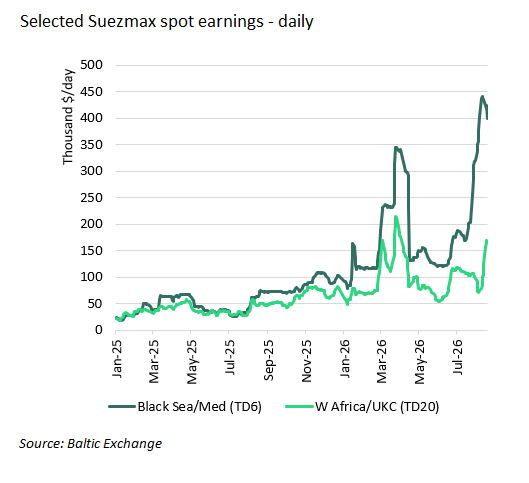

Black Sea insecurity, Red Sea rerouting and increasing demand for Atlantic cargoes are all increasing Suezmax earnings.

A major driver of Suezmax earnings premiums has been deteriorating security in the Black Sea. Since July, Ukraine ramped up attacks on merchant shipping in the Black Sea, including 9 tankers at or near the CPC terminal. CPC exports have averaged 1.37m b/d since July, compared to nearly 2m b/d in June. On the 8th of August, Ukraine announced it would stop targeting non-Russian and non-sanctioned ships loading at the CPC terminal. This was at the urging of US officials. But a Suezmax laden with cargo from the CPC terminal was reportedly hit by a Ukrainian drone last Sunday, despite the exemption.
This incident underscores that Black Sea risk remains elevated, and there is no guarantee conditions will improve. Last week, Russia rejected a moratorium on attacks on Black Sea shipping by both sides that was proposed by Turkey. AWRPs in the Black Sea have risen to 1.5% of hull value and machinery in the last month, up from 0.65%, a level which was already pricing in elevated risk. Owners willing to call in the Black Sea are commanding huge premiums. Suezmax earnings to load at the CPC terminal have doubled in the last month, from $194,000/day to $399,000/day.
Elevated earnings in the Black Sea are affecting positioning across the Atlantic Basin, just as Suezmax demand has picked up throughout the Atlantic. Our brokers report that some owners willing to load at CPC are only interested in Black Sea cargoes and are unwilling to consider West Africa cargoes. This has contributed to tightening availability in WAf. In the last ten days, earnings for West Africa to Europe have increased from $78,000 to $168,000.
At the same time, demand for Suezmaxes in the US Gulf has strengthened, pushing up earnings on the US Gulf to ARA route from $87,500/day to $152,000 over the last ten days. Our brokers expect WAf and US Gulf markets to be topping out for now but still remain supported.
Elsewhere in the Atlantic, earnings from Guyana to ARA have more than doubled over the last ten days, from $82,000/day to $166,000/day. Our brokers report a substantial increase in stems on offer in September compared to August.
Additionally, a busy VLCC Atlantic market for bookings to Asia shows no sign of letting up. In the last week alone, VLCC spot rates out of Brazil, the US Gulf and West Africa have increased by nearly 65%, 70% and 50%, respectively. This should support demand for Suezmaxes on intra-Atlantic voyages as VLCCs are engaged on longer-haul voyages to the East. If VLCC rates continue to rise, we could even see increased demand for Atlantic-to-East Suezmax voyages if the Middle East disruptions continue.
Disruption in the Red Sea is creating an additional source of Suezmax employment. In the Mediterranean, liftings from Sidi Kerir have surged, as Saudi Arabia reroutes its crude from Yanbu via the SUMED pipeline to avoid the Bab-el-Mandeb. So far this month, Sidi Kerir liftings are at a record high of 1.9m b/d, up 950k b/d from July. The increase in liftings has been taken on by Suezmaxes – accounting for 30% (560k b/d) of the liftings – and VLCCs – accounting for 36% (670k b/d) of liftings. The balance has been carried on Aframaxes, which have not seen liftings increase m-o-m. Three of the twelve Suezmaxes that have lifted cargoes at Sidi Kerir this month are en route to Asia around the Cape of Good Hope, while the remainder went to Europe. Additionally, five Suezmaxes are operating as shuttle tankers between Yanbu and Ain Sukhna, discharging cargo into the SUMED pipeline. Previously, this shuttle run was exclusively served by VLCCs.